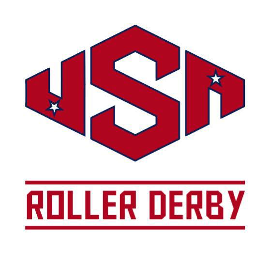
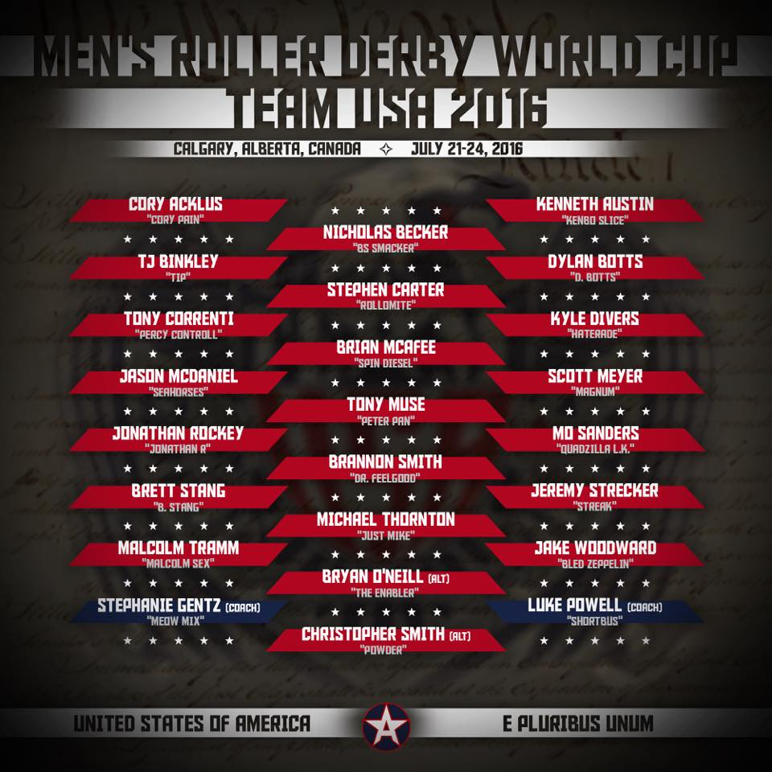

MRDWC 2016 Team Review: Team USA
Moving across the Atlantic as we continue our look at MRDWC contenders, next up is a team that needs no introduction: Team USA. The defending champions from 2014's inaugural MRDWC, will we see a repeat of this feat in Calgary? Team USA have been placed in the Red group, alongside Finland, Japan, Mexico, and of particular interest, Ireland and Scotland.
We spoke to Tony Muse, AKA Peter Pan, about the team's preparation and objectives for the tournament.


The Team USA selection is, as expected, very strong. How did you approach recruiting and selecting the team?
For the selection of Team USA, we wanted to give as many skaters the opportunity to try out and be noticed as we possibly could. We held two separate try outs, one in Des Moines Iowa, home of Your Mom Men's Derby and a second in Deland Florida, home of the Magic City Misfits. There was no recruiting as everyone was invited and given the opportunity to show their skills against other top level skaters. After multiple rounds of blind voting from coaches and managers, the final squad was selected.As defending champions from the first MRDWC, what are your aims in performance this World Cup?
Coming in to the second World Cup and as defending champions, we know we will have a large target on our team. Some of the players on Team USA are returning and others will be playing for their country for the first time. We think the passion that some of the new players will bring mixed with some of the experience some of the veterans will bring will be the perfect blend to keep us in the right frame of mind. As elite players, we are all looking to play the "perfect" game so every time we gather to play with such high level teammates, we aim for perfection.Your group features several European teams, plus one of the last World Cup’s fan favourites Japan and debutants Mexico - what teams are you most looking forward to playing? If you have time between games, who are you most looking forward to watching play?
We get excited about playing teams from all over the world because the teams tend to all skate a bit different and somewhat take on their own unique temperament. At the last World Cup, some of the fans were as excited to be at the event as the players so it added even an additional level of energy to the game with particular teams. We think the teams from Japan and Argentina will continue to be fan favorites but I imagine we may have new teams like the Italian or Mexican squads stealing hearts this time around. The home team from Canada should be strong and well supported and of course England as the previous World Cup runner's up will be a solid squad to play against. We really look forward to the entire event both playing and watching as the World Cup can't be compared or matched to any other tournament in the sport.The tournament is a lot closer for you this time around; how have you been fundraising and preparing for the trip?
Because the World Cup is so much closer this year, I think many members of the USA team will be bringing over more family, friends and support. Although Canada is right above us, many of the team members have not had the opportunity to travel much in Canada so the event is a great reason to do so. The team has been working with sponsors to help with some expenses but many of the fund raising ventures for Team USA have not started as we still have one big team camp before the event.*This year, MRDWC are promoting the lead up to the Cup with the "Road to Calgary" tag. In the spirit of this, what bouts and training have you been doing since the last selection?
For our "Road to Calgary", Team USA has yet to compete against any other squad. That will all change soon as in mid May Team USA will be playing an exhibition bout against the reigning MRDA champions the St Louis Gatekeepers. This event will be accompanied by a training camp for the team. 